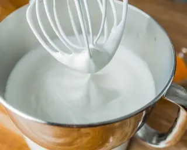

-
Stats
Total Time: 45 minutes
Prep Time: 30 minutes
Cook Time: 15 minutes
Degree of Difficulty: Easy
Servings: 16 slices -
Ingredients
6 eggs separated
6 tbsp sugar
6 tbsp all-purpose flour
1 tspn vanilla
Tip: You can as easily make a layered cake, if using a cookie sheet, just cut the cake in two lengthwise and spread one half with butter cream. You could also bake two or more round cake forms, and again spread each layer with butter cream. You could also cut each layer in two and therefore create more layers with butter cream on each layer, then decorate the top and sides of the cake with more butter cream.
Instructions
- Preheat oven to 350°F.
- Line a jelly-roll pan with parchment paper, a 10x16 sheet or larger for a thinner cake.
- Separate eggs from yolks.
- Using a stand mixer, beat egg yolks, adding sugar a tablespoonful at a time until the egg/sugar mixture forms a ribbon and is a light yellow in color.
- Continue beating, add vanilla and flour, one tablespoon full at a time.
- Whip egg whites in a separate bowl until stiff. 
- Turn mixer onto the lowest speed or using a spatulae, gradually blend the egg yolk mixture and egg whites together; do not over work.
- Spread mixture in papered pan and bake for 10-15 minutes or until the center bounces back when touched, it should be a light golden color.

If making a roll cake, cool baked cake until it is cool enough to handle (2-3 minutes) and then roll the cake, parchment paper and all, into a roll, making sure that the seam is on the underside.
Assembly

- Unroll the cake and remove paper from cake.
- Spread your choice of mocha cream over the cake, re-roll, and then coat the rolled cake with the remainder of the butter cream.
- Decorate outside of cake and place in the freezer until ready to serve.